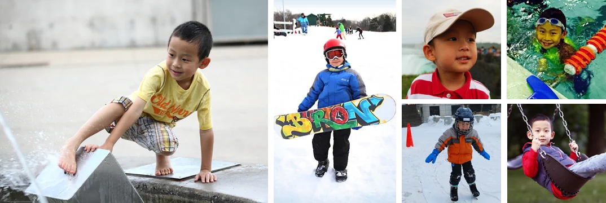

Ronald is a sweet and smart boy. From a non-stop baby boy to a 9-year-old, Ronald has experienced a lot! At age 5 he started practicing karate, swimming, and skating. At age 6 he traveled to Italy and France, of course not on his own. At age 7 he started skiing, and one year later he started snowboarding.
Ronald is also a great helper. At daycare he often helped his teachers carrying thermos to the playground and back to the classroom. At home he never says no to house chores when asked for help. In grade 2 he won a monthly award called Cooperation. The award is in recognition of the students who have consistently demonstrated the value of cooperation.
McKee Public School has a monthly award for a student from every class in all grades. In grade 3 Ronald won the Honesty award. The interesting part is, his teacher let the kids vote who they think is the most honest student in class. Ronald got 20 out of 21.
Ronald loves reading and games. His favorite game is Minecraft. He says he doesn’t like school but he wants to become an inventor! He believes since he reads a lot, he will be smarter and pass university easier. And he thinks he may want to start his career by selling books.
Maybe Ronald will become a publisher one day. Who knows? Keep up the good work Ronald!
